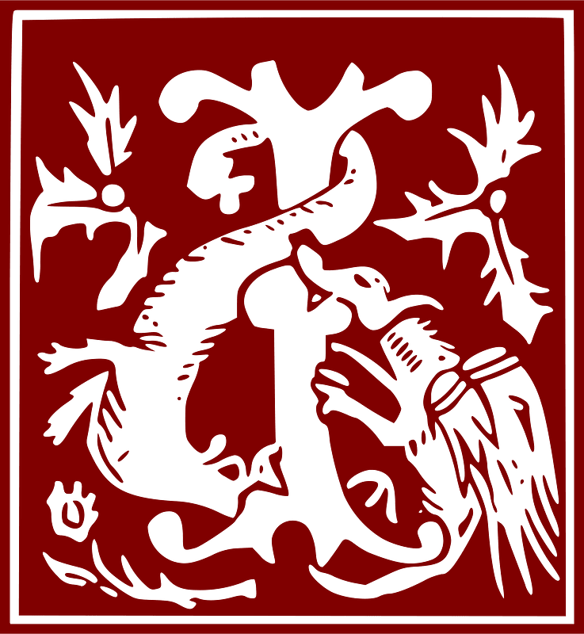

n princípio erat Ver-bum, et Verbum erat apud Deum, et Deus erat Verbum. Hoc erat in princípio apud Deum. Ómnia per ipsum facta sunt : et sine ipso factum est nihil, quod factum est : in ipso vita erat, et vita erat lux hóminu : et lux in ténebris lucet, et ténebræ eam non compre-hendérunt. Fuit homo missus a Deo, cui nomen erat Joánnes. Hic venit in testimónium, ut testi-mónium perhibéret de lúmine, ut ómnes créderent per illum. Non erat ille lux, sed ut testimónium perhibéret de lúmine. Erat lux vera, quæ illúminat ómnem hóminem veniéntem in hunc mundum. In mundo erat, et mundus per ipsum factus est, et